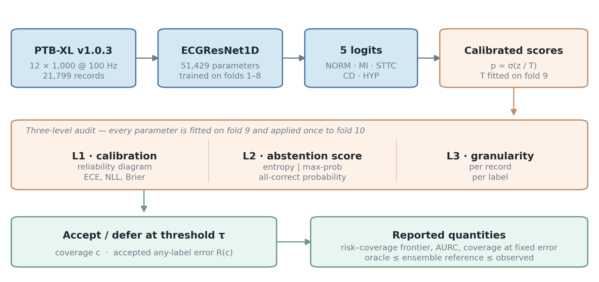
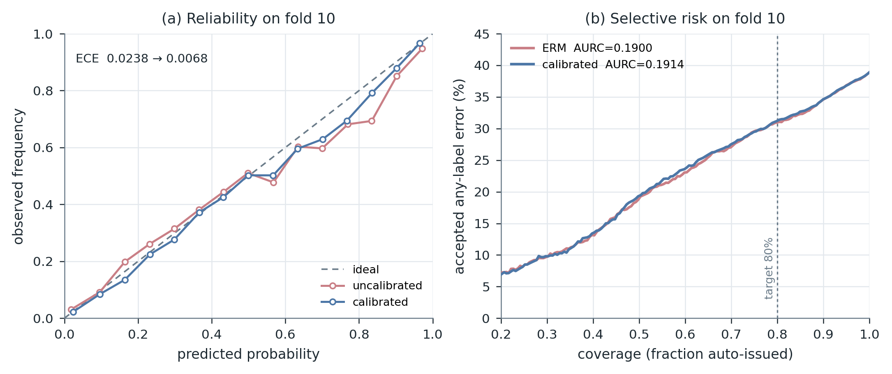
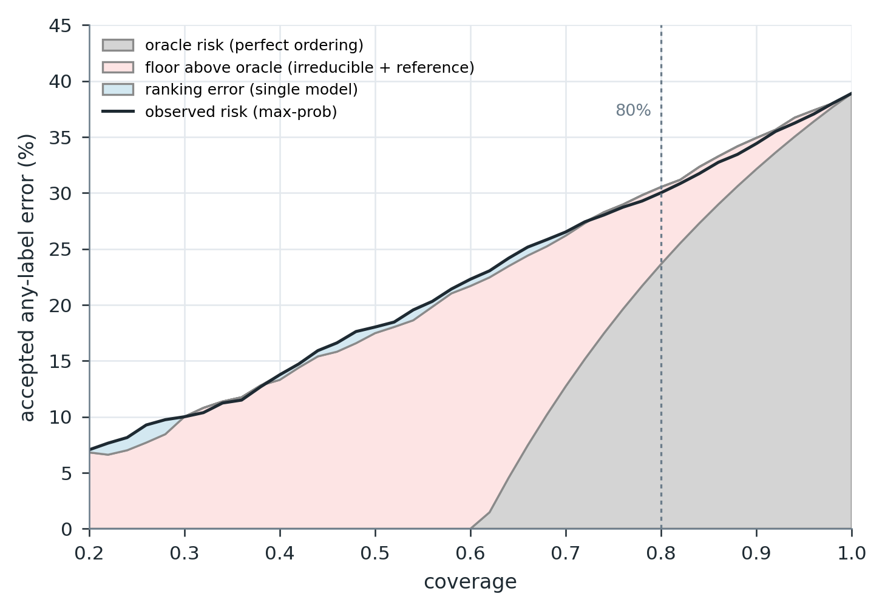
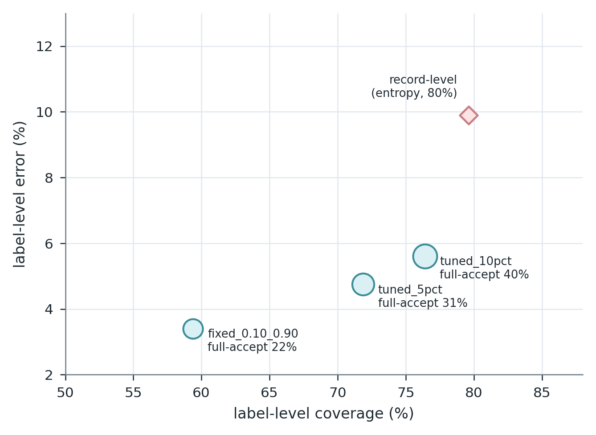
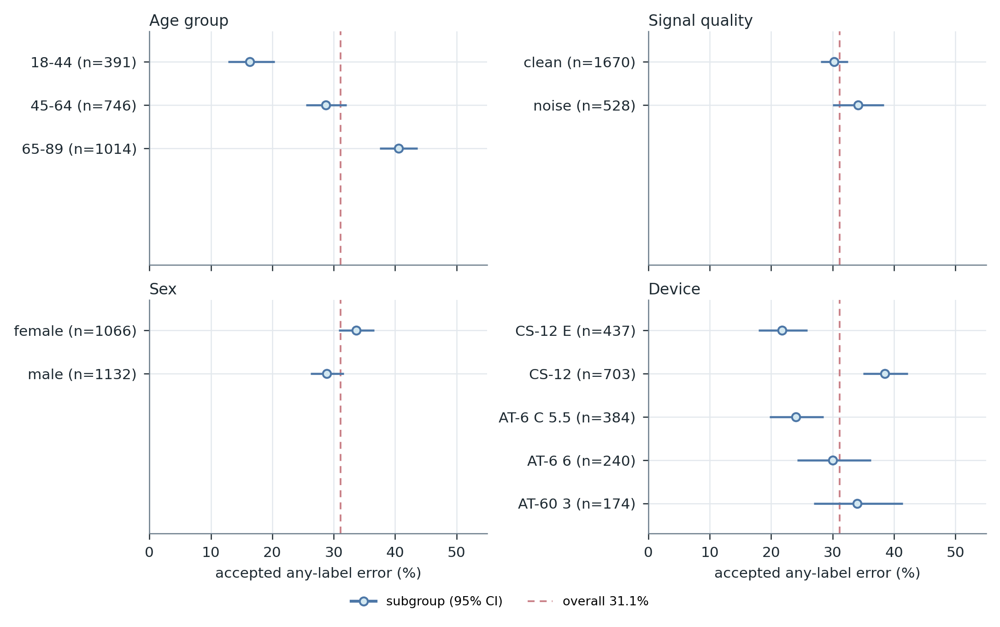

L1 · Calibration
Temperature scaling on the probability scale. Reliability diagram, ECE, NLL, Brier. Changes the value of a probability, not the ranking it induces.
MD6329 Deep Learning for Healthcare AI · Mini Project
A three-level audit of selective prediction for multi-label ECG classification
A model whose expected calibration error improves by a factor of 3.5 produces an almost identical risk–coverage curve. On PTB-XL, the score layer has a budget of 6.5 points; what changes triage is the decision unit, not the score.
01 · Problem
Twelve-lead ECG interpretation is high-volume and unevenly distributed across readers. The realistic role for a model is a triage filter: it signs off on the records it is sure about and routes the rest to a clinician.
The quantity that matters in that role is the error rate among issued records, not average AUROC. Yet the standard report pairs a discrimination metric with a calibration metric, and treats good calibration as evidence that confidence can be trusted to decide when to abstain.
02 · Method

Temperature scaling on the probability scale. Reliability diagram, ECE, NLL, Brier. Changes the value of a probability, not the ranking it induces.
Mean entropy, mean maximum probability, all-correct probability. Changes the ordering of records, and therefore the frontier itself.
Decide per record or per label. Not two implementations of one policy, but two clinical workflows with different achievable operating points.
03 · Results




04 · Replication
| Seed | T | Coverage | Baseline error | Calibrated error | Δ | Macro AUROC |
|---|---|---|---|---|---|---|
| 42 | 1.1868 | 79.62 % | 30.96 % | 31.14 % | +0.18 | 0.9076 |
| 43 | 1.2446 | 78.30 % | 29.44 % | 29.81 % | +0.37 | 0.9082 |
| 44 | 1.1693 | 80.66 % | 31.35 % | 31.81 % | +0.46 | 0.9083 |
| mean | — | 79.53 % | 30.58 % | 30.92 % | +0.34 ± 0.14 | 0.9080 |
Macro AUROC moves by 0.0004 across seeds while the abstention decision moves by 2.4 points of coverage: seed variance lives in the decision, not in the classifier.
05 · Interactive
The deck is a Python script, not a slide file. Each step is executed and rendered live: tensor shapes, a real forward pass, the temperature fit, and the three-tier error budget. Eighty steps, four execution states, arrow keys only.
06 · Take-home
Limits: single centre, one architecture family; thresholds tuned on all of fold 9; no external validation. All numbers are empirical, not conformal guarantees.